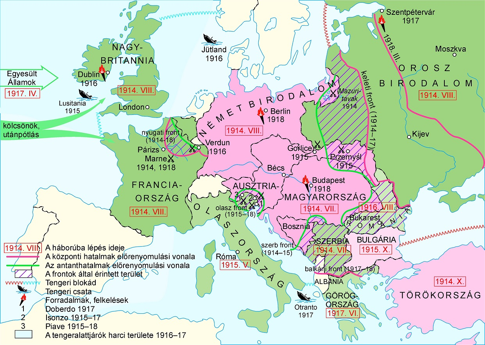
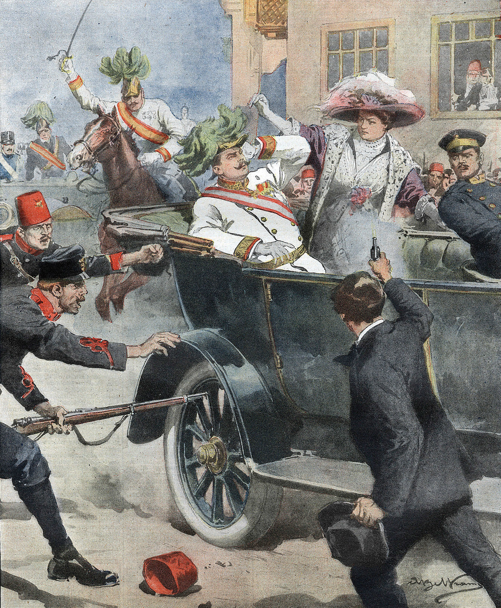
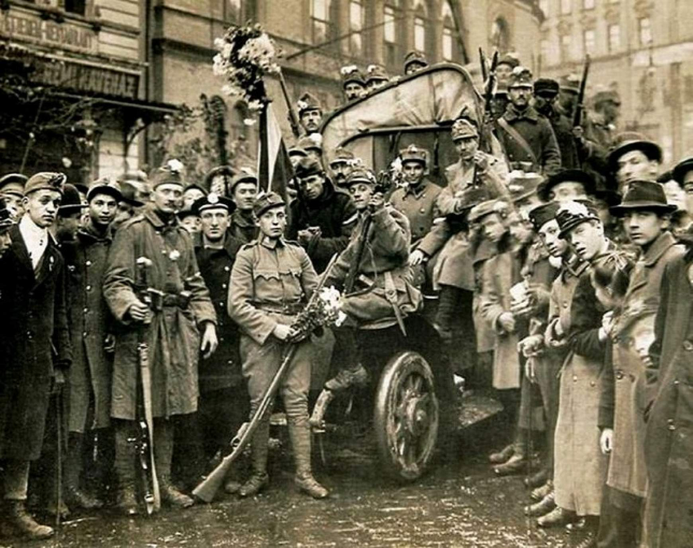
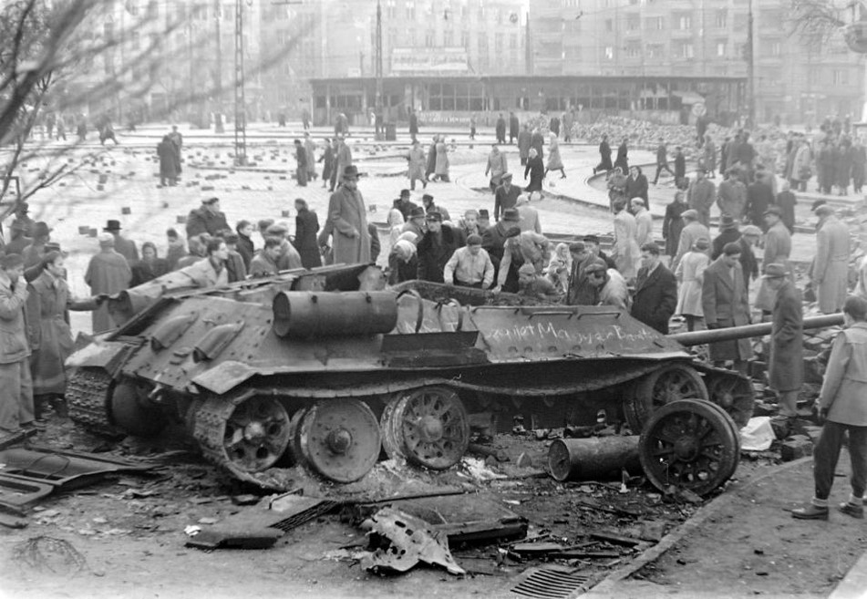

Az első világháború (1914–1918) a történelem egyik legnagyobb konfliktusa volt, amely egész Európát és a világ nagy részét érintette.
Az első világháború kitörésének több oka volt. Európában a nagyhatalmak között egyre erősebbé vált a rivalizálás, valamint a katonai szövetségek rendszere is feszültséget teremtett.
A nagyhatalmak gyarmatokért és gazdasági befolyásért versengtek.
Az országok egyre nagyobb hadseregeket és modernebb fegyvereket építettek ki.
Kialakult a Központi Hatalmak és az Antant szövetsége.
Sok nép saját államot akart, ami különösen a Balkánon okozott konfliktusokat.

A közvetlen kiváltó ok Ferenc Ferdinánd trónörökös meggyilkolása volt 1914. június 28-án Szarajevóban.
A merénylet után az Osztrák–Magyar Monarchia hadat üzent Szerbiának. A szövetségi rendszerek miatt rövid idő alatt szinte egész Európa háborúba sodródott.

Magyarország az Osztrák–Magyar Monarchia részeként vett részt a háborúban.
A magyar katonák több fronton is harcoltak, például az orosz és az olasz fronton. A háború súlyos emberveszteségeket és gazdasági problémákat okozott az országnak.
A konfliktus végén a Monarchia összeomlott, ami Magyarország számára hatalmas politikai és területi változásokat eredményezett.

Az első világháború több mint 15 millió ember halálát okozta, és teljesen átalakította Európa térképét.
Összeomlott az Osztrák–Magyar Monarchia, az Oszmán Birodalom és az Orosz Birodalom.

Több új állam jött létre Európában.
A békeszerződések és az elégedetlenség később újabb konfliktushoz vezettek.